Немного о мясе для стейков
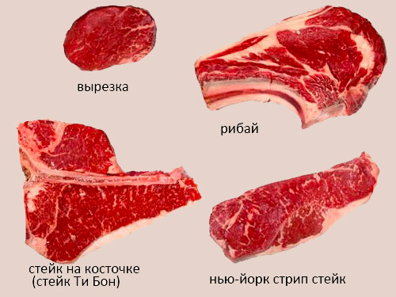Стейк — это обжаренный с двух сторон толстенький (3-5 см.) кусок мяса. Слово СТЕЙК происходит от древнескандинавского слова «жарить». Мясо на стейк берут из тех участков туши, которые не были задействованы в активном движении. От всей мышечной массы животного для приготовления стейка годится едва ли 10%. Куски на стейк нарезают поперёк волокон.
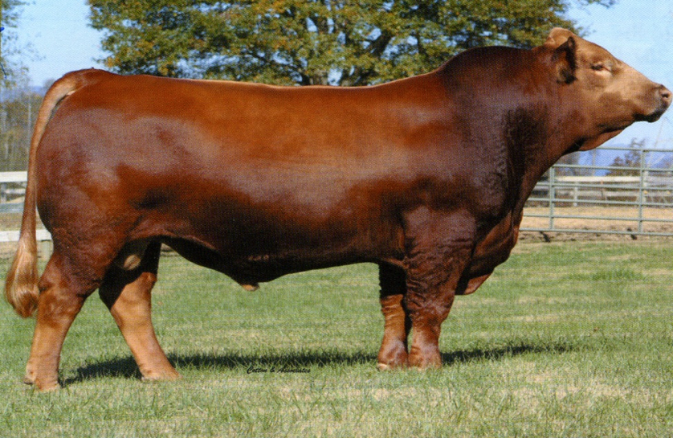Расхожее мнение о том, что самым вкусным стейком является стейк из мяса быков породы ангус Angus не имеет под собой почвы. Да, ангус — это известная порода и хорошо раскрученный бренд. Однако по вкусовым качествам мясо ангуса ничуть не лучше (и не хуже) мяса других менее известных мясных новозеландских пород. К хорошими мясным породами также относятся Hereford, Belted Galloway, Luing, Red Poll, Welsh Black, Sussex и другие. Будет жалко, если мода на мясо чёрного ангуса заставит новозеландских фермеров отказаться от всех остальных не менее ценных пород скота. Мраморные характеристики мяса (вкрапления межжилкового жира) можно наблюдать практически у любой породы новозеландского мясного скота.
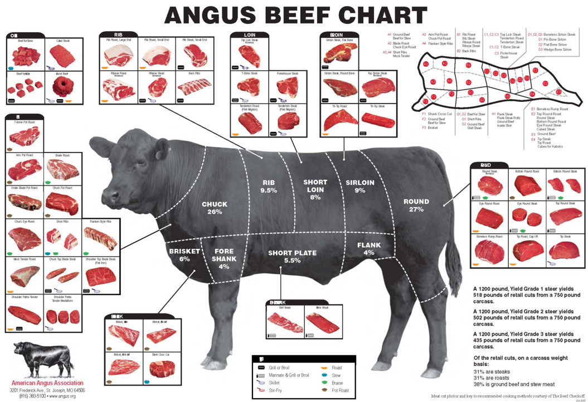Вызревание мяса
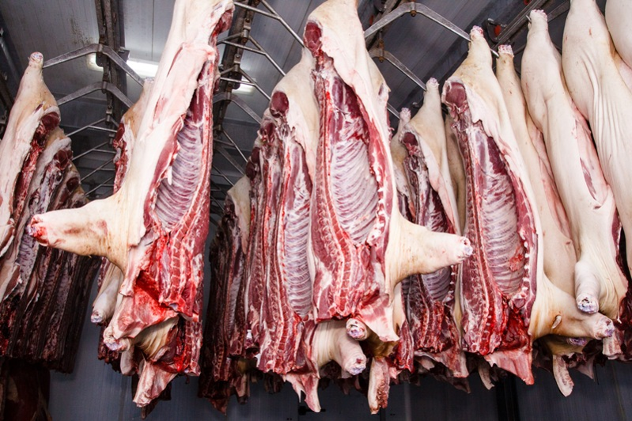Мясо для стейка ни в коем случае не должно быть парным или 2–3х дневной свежести! Между забоем скота и изготовлением хорошего стейка в идеале должно пройти не менее 20 дней! В этот период освежеванная говяжья туша выдерживается (вызревает) в холодном хорошо вентилируемом помещении (от 0 до +4°C). В Новой Зеландии мясо принято выдерживать 21-28 дней, в Аргентине мясо выдерживают более 29 дней. За это время внутри туши происходит ферментация: переход гликогена в сахар, расслабление и разрыхление мышечных волокон, разрушение клеточных стенок. В результате мясо становится нежным, сочным и вкусным.
Dry-Aged Beef, правильно выдержанная говядина, стоит гораздо дороже свежей говядины и в Новой Зеландии продается только в специализированных магазинах мясных деликатесов. В супермаркетах встречается её упрощенный вариант — Wet-Aged Beef, говядина прошедшая выдержку в вакуумной упаковке. В настоящее время это наиболее распространенный способ выдержки мяса. Он требует гораздо меньше времени (4-7 дней) и экономически более выгоден для производителя. При выдержке мяса в вакуумной упаковке товар не теряет в весе (при сухой выдержке из-за потери влаги теряется до трети массы продукта). Считается, что мясо, прошедшее вызревание в вакуумной упаковке, более нежное (так как в нём сохраняется влага), а мясо, выдержанное на воздухе, обладает более насыщенным и концентрированным вкусом.
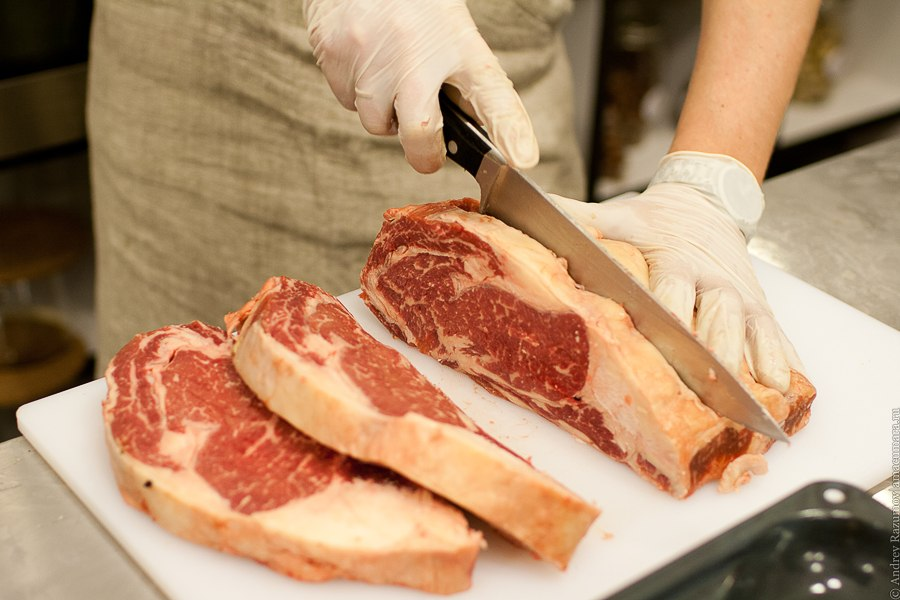Нарезать мясо для стейков нужно так, что бы нож всегда был перпендикулярно волокнам. Лучше это делать в три движения ножа, поэтому он должен быть достаточно длинным и острым. Толщина стейка должна быть равномерной по всей его длине от 2,5 до 5 сантиметров.
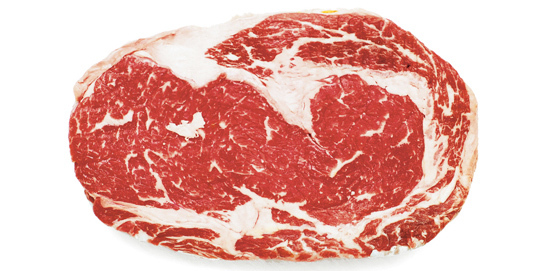 Обычно часть отруба над рёбрами от шеи до двенадцатого ребра называют Толстым краем или Рибай - глаз на кости по профессиональной классификации. Эта часть состоит из нескольких мышц с прожилками жира между ними, за это она называется Мраморная говядина. Из неё готовят Рибай стейк из шейной части, Клаб - Стейк из спинной части Толстого края с небольшой рёберной косточкой. В шейной части мясо более жирное. 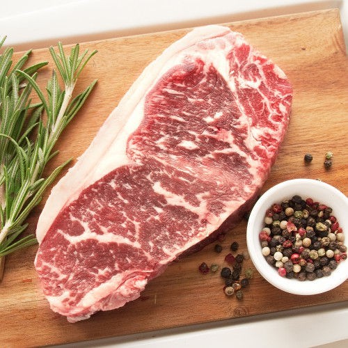Вторая половина отруба со спины, которая является продолжением Рибая от тринадцатого ребра и далее называется Стриплойн или дословно плоская вырезка в России её называют Тонкий край. Здесь жир не находится внутри куска мяса, а покрывает только его верхнюю часть тонким слоем. Если её толщина будет значительной, то часть жировой прослойки можно срезать. Вдоль всего куска Стриплойна, с его позвоночной части проходит твёрдая жила, которую так же нужно удалить. Кроме того там же расположена тонкая мышца идущая вдоль Стриплойна и при жарке она легко отделяется. По этому её лучше срезать заранее. Иногда на другой стороне стейка, где он прикрепляется к позвоночнику остаются сухожилия, их то же нужно аккуратно срезать. И ещё можно отрезать излишний жир на краю стейка, так называемую губу.
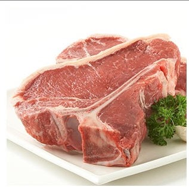Вся эта часть отруба идёт для приготовления стейков Ти-бон, в нём находится Т-образная косточка. Он расположен на границе спинной и поясничной части отруба и состоит из нескольких мышц, кусочка Стриплойн и кусочка Вырезки, стейков Нью Йорк, стейков Портерхаус который вырезают из поясничной части Толстого края вырезки и стейка Стриплойн из поясничной части спины.
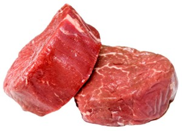Ещё один отруб, который расположен с внутренней части позвоночника называется Вырезка или Филе. С неё нужно удалить серебряную плёнку, отделить манжету, мышцу идущую вдоль всей вырезки и так называемую "голову", утолщение мышцы с края филе, и разрезать на порционные кусочки толщиной в 5 сантиметров. Из Вырезки можно приготовить стейк Филе Миньон из средней его части, Шатобриан из толстого края средней части, а из тонкого края средней части вырезки готовят медальоны Торнедос. Из "головы" вырезки готовят Бифштекс. Все обрезы мяса, кроме плёнок и сухожилий можно использовать в дальнейшем для приготовления бульона, для обжарки в виде Бефстроганов или же для Карпачо.
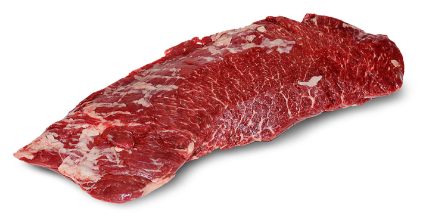Есть ещё одна часть отруба при разделки говядины это Флейм Стейк или Скирт-стейк, Стейк из пашины. Эта мышца поддерживает внутренние органы и не участвует в движении. Стейк состоит из рыхлых волокон и имеет ярко выраженный вкус.
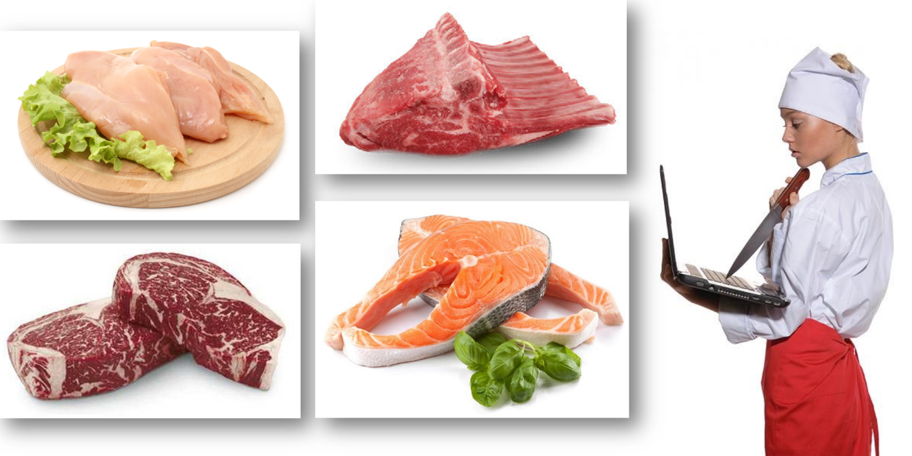С кем не бывало: мы покупаем мясо, кладем его на сковородку, в надежде на то, что оно получится как раз таким, каким мы его и представляем, но в результате получаем резиновый стейк или обугленную отбивную?
Имея хорошее мясо нужно определиться со степенью прожарки - это личное предпочтение каждого, кому то нравиться очень сочный стейк, кому то более прожаренный и сухой. Но определить «На глазок» степень прожарки не так уж и просто, протыкать и разрезать стейк нельзя – сок вытечет, а отмерять приготовление по времени тоже не всегда верно, ведь мясо для будущего стейка может сильно отличатся раз от раза по своей плотности, толщине волокон, «зрелости», содержанию влаги и жира, да и просто по толщине нарезки.
Специалисты сходятся в одном: чем выше температура внутри стейка, тем он менее сочный и соответственно больше степень его прожарки.
Не будем принимая во внимание крайности: сырые стейки с совсем не прожаренным мясом – и прогоревшим, сухим и твердым стейком.
Основные степени прожарки:
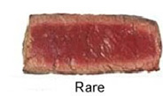С кровью, обжаренный снаружи, имеет твердую корочку и красную теплую середину, t мяса ≈ 55 °C
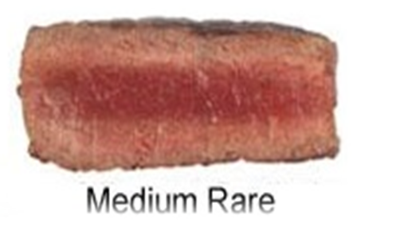Слабой прожарки, мясо доведено до состояния отсутствия крови, с соком ярко выраженного розового цвета, t мяса ≈ 60 °C
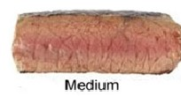Средней прожарки, внутри светло-розовый сок, t мяса ≈ 65 °C. Самая оптимальная степень прожарки.
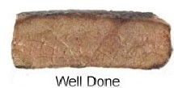Абсолютно прожаренное мясо, почти без сока, t мяса ≈ 75 °C
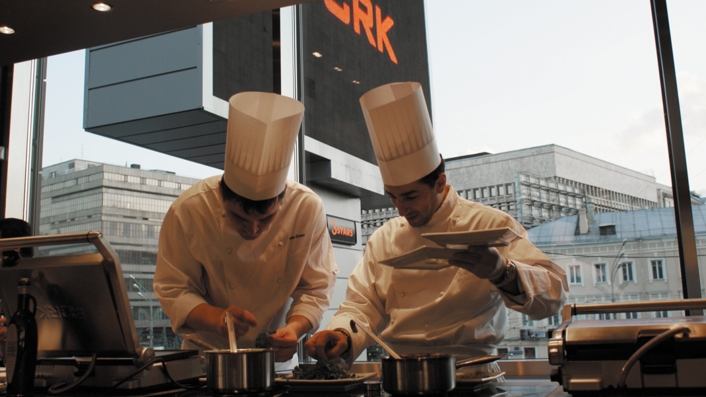Да, жарить стейк не так уж и просто! Кто-то умеет это делать. Кто-то считает это большим искусством, требующего знания о опыта. Кто-то готов платить за правильный стейк в специализированных заведениях. Приготовление стейка - целая культура.